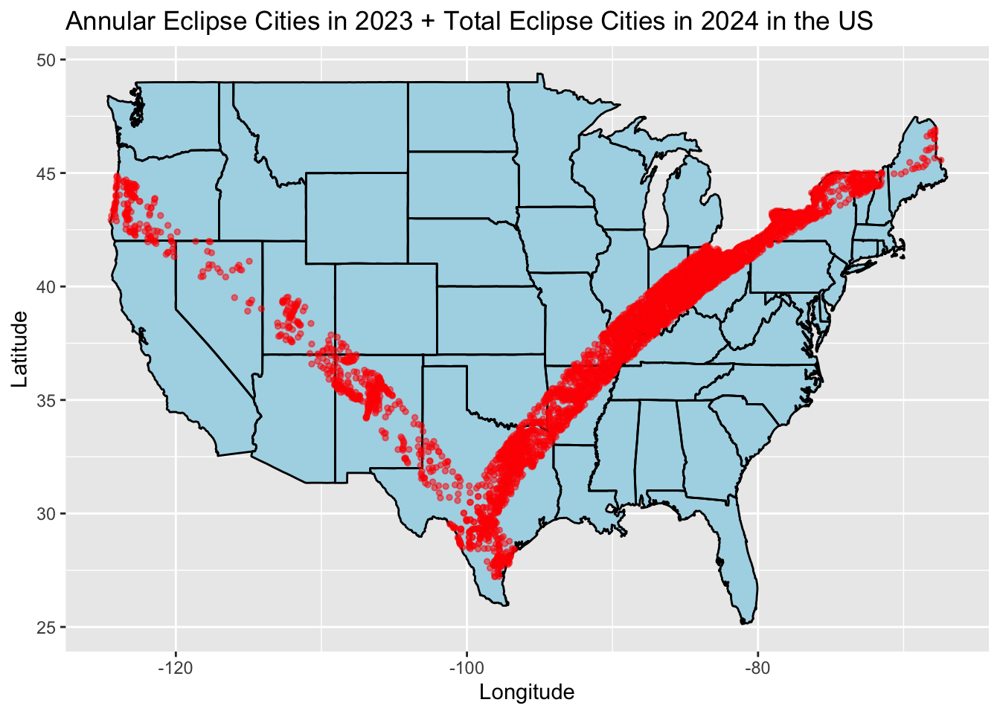
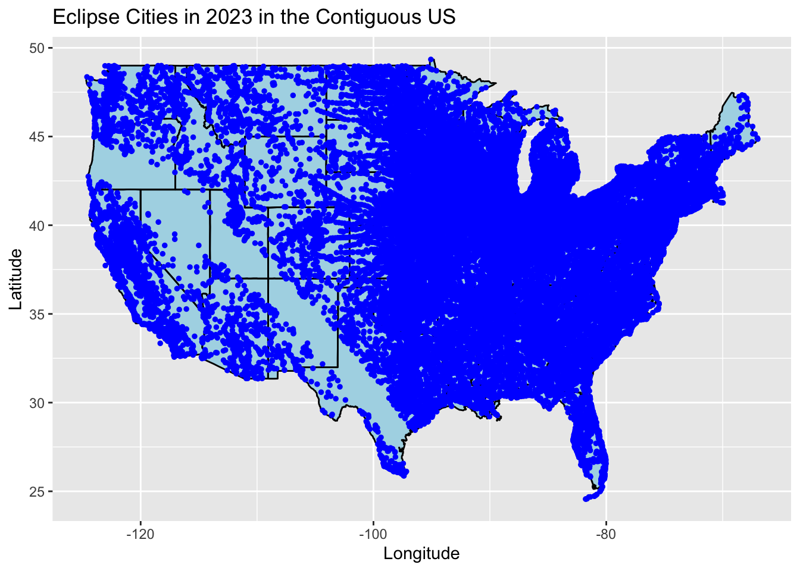
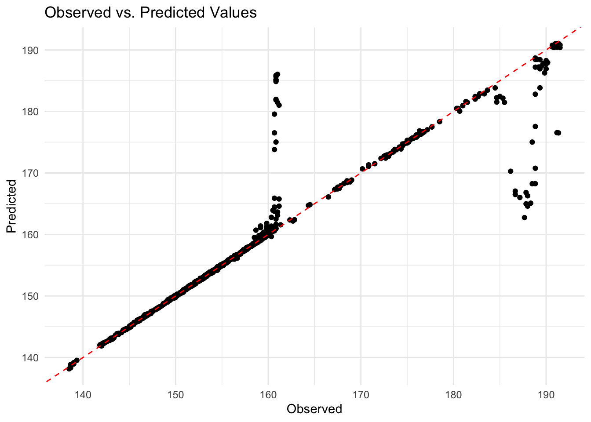

Rows: 811 Columns: 10
── Column specification ────────────────────────────────────────────────────────
Delimiter: ","
chr (2): state, name
dbl (2): lat, lon
time (6): eclipse_1, eclipse_2, eclipse_3, eclipse_4, eclipse_5, eclipse_6
ℹ Use `spec()` to retrieve the full column specification for this data.
ℹ Specify the column types or set `show_col_types = FALSE` to quiet this message.
Rows: 31363 Columns: 9
── Column specification ────────────────────────────────────────────────────────
Delimiter: ","
chr (2): state, name
dbl (2): lat, lon
time (5): eclipse_1, eclipse_2, eclipse_3, eclipse_4, eclipse_5
ℹ Use `spec()` to retrieve the full column specification for this data.
ℹ Specify the column types or set `show_col_types = FALSE` to quiet this message.
Rows: 3330 Columns: 10
── Column specification ────────────────────────────────────────────────────────
Delimiter: ","
chr (2): state, name
dbl (2): lat, lon
time (6): eclipse_1, eclipse_2, eclipse_3, eclipse_4, eclipse_5, eclipse_6
ℹ Use `spec()` to retrieve the full column specification for this data.
ℹ Specify the column types or set `show_col_types = FALSE` to quiet this message.
Rows: 28844 Columns: 9
── Column specification ────────────────────────────────────────────────────────
Delimiter: ","
chr (2): state, name
dbl (2): lat, lon
time (5): eclipse_1, eclipse_2, eclipse_3, eclipse_4, eclipse_5
ℹ Use `spec()` to retrieve the full column specification for this data.
ℹ Specify the column types or set `show_col_types = FALSE` to quiet this message.
summarize dataset
skim(eclipse_annular_2023)
Data summary
Name
eclipse_annular_2023
Number of rows
811
Number of columns
10
_______________________
Column type frequency:
character
2
difftime
6
numeric
2
________________________
Group variables
None
Variable type: character
skim_variable
n_missing
complete_rate
min
max
empty
n_unique
whitespace
state
0
1
2
2
0
8
0
name
0
1
3
30
0
795
0
Variable type: difftime
skim_variable
n_missing
complete_rate
min
max
median
n_unique
eclipse_1
0
1
54300 secs
55620 secs
15:13:30
118
eclipse_2
0
1
56750 secs
58710 secs
16:00:20
161
eclipse_3
0
1
58555 secs
61110 secs
16:34:51
632
eclipse_4
0
1
58707 secs
61266 secs
16:38:23
608
eclipse_5
0
1
60690 secs
63640 secs
17:15:40
212
eclipse_6
0
1
63500 secs
67120 secs
18:09:20
244
Variable type: numeric
skim_variable
n_missing
complete_rate
mean
sd
p0
p25
p50
p75
p100
hist
lat
0
1
35.41
4.96
27.22
31.30
35.42
38.42
44.87
▅▂▇▂▃
lon
0
1
-108.05
8.27
-124.45
-111.98
-106.70
-101.36
-96.72
▅▁▆▇▇
skim(eclipse_partial_2023)
Data summary
Name
eclipse_partial_2023
Number of rows
31363
Number of columns
9
_______________________
Column type frequency:
character
2
difftime
5
numeric
2
________________________
Group variables
None
Variable type: character
skim_variable
n_missing
complete_rate
min
max
empty
n_unique
whitespace
state
0
1
2
2
0
52
0
name
0
1
2
57
0
20664
0
Variable type: difftime
skim_variable
n_missing
complete_rate
min
max
median
n_unique
eclipse_1
0
1
0 secs
62930 secs
15:35:30
674
eclipse_2
0
1
0 secs
63230 secs
16:15:30
527
eclipse_3
0
1
0 secs
66310 secs
16:59:20
508
eclipse_4
0
1
0 secs
69240 secs
17:44:50
635
eclipse_5
0
1
0 secs
71550 secs
18:28:10
698
Variable type: numeric
skim_variable
n_missing
complete_rate
mean
sd
p0
p25
p50
p75
p100
hist
lat
0
1
38.80
5.83
17.96
35.36
39.56
41.93
71.25
▁▇▇▁▁
lon
0
1
-91.97
15.70
-176.60
-97.50
-89.26
-81.14
174.11
▂▇▁▁▁
skim(eclipse_total_2024)
Data summary
Name
eclipse_total_2024
Number of rows
3330
Number of columns
10
_______________________
Column type frequency:
character
2
difftime
6
numeric
2
________________________
Group variables
None
Variable type: character
skim_variable
n_missing
complete_rate
min
max
empty
n_unique
whitespace
state
0
1
2
2
0
14
0
name
0
1
3
33
0
2938
0
Variable type: difftime
skim_variable
n_missing
complete_rate
min
max
median
n_unique
eclipse_1
0
1
61820 secs
66170 secs
64175.0 secs
416
eclipse_2
0
1
64520 secs
68660 secs
66840.0 secs
398
eclipse_3
0
1
66450 secs
70440 secs
68727.5 secs
2012
eclipse_4
0
1
66624 secs
70525 secs
68909.0 secs
2032
eclipse_5
0
1
68680 secs
72200 secs
70770.0 secs
340
eclipse_6
0
1
71480 secs
74490 secs
73340.0 secs
293
Variable type: numeric
skim_variable
n_missing
complete_rate
mean
sd
p0
p25
p50
p75
p100
hist
lat
0
1
38.33
3.98
28.45
35.42
39.24
41.22
46.91
▂▃▆▇▂
lon
0
1
-86.93
7.07
-101.16
-92.41
-86.56
-82.31
-67.43
▃▆▇▃▁
skim(eclipse_partial_2024)
Data summary
Name
eclipse_partial_2024
Number of rows
28844
Number of columns
9
_______________________
Column type frequency:
character
2
difftime
5
numeric
2
________________________
Group variables
None
Variable type: character
skim_variable
n_missing
complete_rate
min
max
empty
n_unique
whitespace
state
0
1
2
2
0
52
0
name
0
1
2
57
0
19576
0
Variable type: difftime
skim_variable
n_missing
complete_rate
min
max
median
n_unique
eclipse_1
0
1
0 secs
67380 secs
63930 secs
559
eclipse_2
0
1
0 secs
68660 secs
66260 secs
570
eclipse_3
0
1
0 secs
70480 secs
68460 secs
527
eclipse_4
0
1
0 secs
72260 secs
70620 secs
492
eclipse_5
0
1
0 secs
74520 secs
72920 secs
583
Variable type: numeric
skim_variable
n_missing
complete_rate
mean
sd
p0
p25
p50
p75
p100
hist
lat
0
1
38.76
6.01
17.96
35.24
39.52
42.04
71.25
▁▇▇▁▁
lon
0
1
-93.00
16.35
-176.60
-99.08
-90.30
-81.16
174.11
▂▇▁▁▁
EDA
Firstly, I am thinking if I can check which States can witness eclipse in each year based on the type of eclipse. So I want to create maps pointing out the locations included in the datasets among the states.
# US map datamap_data_us <-map_data("usa")map_data_states <-map_data("state")# Plot the map1map1 <-ggplot() +geom_polygon(data = map_data_us, aes(x = long, y = lat, group = group), fill ="lightblue") +geom_polygon(data = map_data_states, aes(x = long, y = lat, group = group), fill =NA, color ="black") +# State boundariesgeom_point(data = eclipse_annular_2023, aes(x = lon, y = lat), color ="red", size =1, alpha =0.5) +# Annular eclipse pointsgeom_point(data = eclipse_total_2024, aes(x = lon, y = lat), color ="red", size =1, alpha =0.5) +# Total eclipse pointslabs(title ="Annular Eclipse Cities in 2023 + Total Eclipse Cities in 2024 in the US",x ="Longitude", y ="Latitude")# Display the plotprint(map1)

# Filter out Alaska data pointseclipse_partial_2023_contiguous <-subset(eclipse_partial_2023, lat >23& lat <50)# Plot the map1map2 <-ggplot() +geom_polygon(data = map_data_us, aes(x = long, y = lat, group = group), fill ="lightblue") +geom_polygon(data = map_data_states, aes(x = long, y = lat, group = group), fill =NA, color ="black") +# State boundariesgeom_point(data = eclipse_partial_2023_contiguous, aes(x = lon, y = lat), color ="blue", size =1) +# Partial eclipse points within mainlandlabs(title ="Eclipse Cities in 2023 in the Contiguous US",x ="Longitude", y ="Latitude") # Display the plotprint(map2)

So based on the maps, I have found that except for annular eclipse being observed, almost any other locations in the States were regarded as partial witness. And two strips in map1 crosses in Texas, which means living in the south part of Texas could witness both annular and total eclipse in 2023 and 2024.
data cleaning
I think since annular eclipse and total eclipse are relatvie rare so I would like to explore a little bit more with these 2 dataset.
raise a question
I wonder if the time duration of the visible eclipse is correlated to the location of the observation.
# eclipse_annular_2023 new variable time durationeclipse_annular_2023 <- eclipse_annular_2023 %>%mutate(eclipse_1_posix =as.POSIXct(eclipse_1, format ="%H:%M:%S"),eclipse_6_posix =as.POSIXct(eclipse_6, format ="%H:%M:%S"),time_duration_minutes =as.numeric(difftime(eclipse_6_posix, eclipse_1_posix, units ="mins")) )# Display the updated datasetprint(eclipse_annular_2023)
# A tibble: 811 × 13
state name lat lon eclipse_1 eclipse_2 eclipse_3 eclipse_4 eclipse_5
<chr> <chr> <dbl> <dbl> <time> <time> <time> <time> <time>
1 AZ Chilchin… 36.5 -110. 15:10:50 15:56:20 16:30:29 16:33:31 17:09:40
2 AZ Chinle 36.2 -110. 15:11:10 15:56:50 16:31:21 16:34:06 17:10:30
3 AZ Del Muer… 36.2 -109. 15:11:20 15:57:00 16:31:13 16:34:31 17:10:40
4 AZ Dennehot… 36.8 -110. 15:10:50 15:56:20 16:29:50 16:34:07 17:09:40
5 AZ Fort Def… 35.7 -109. 15:11:40 15:57:40 16:32:28 16:34:35 17:11:30
6 AZ Kayenta 36.7 -110. 15:10:40 15:56:00 16:29:54 16:33:21 17:09:10
7 AZ Lukachuk… 36.4 -109. 15:11:20 15:57:10 16:30:50 16:35:05 17:10:50
8 AZ Many Far… 36.3 -110. 15:11:10 15:56:50 16:30:50 16:34:16 17:10:20
9 AZ Nazlini 35.9 -109. 15:11:20 15:57:10 16:32:24 16:33:30 17:10:50
10 AZ Oljato-M… 37.0 -110. 15:10:40 15:56:00 16:29:25 16:33:38 17:09:10
# ℹ 801 more rows
# ℹ 4 more variables: eclipse_6 <time>, eclipse_1_posix <dttm>,
# eclipse_6_posix <dttm>, time_duration_minutes <dbl>
# select only interested variableseclipse_annular_2023_S <- eclipse_annular_2023 %>%select("state","name","lat","lon","time_duration_minutes")# eclipse_total_2024 new variable time durationeclipse_total_2024 <- eclipse_total_2024 %>%mutate(eclipse_1_posix =as.POSIXct(eclipse_1, format ="%H:%M:%S"),eclipse_6_posix =as.POSIXct(eclipse_6, format ="%H:%M:%S"),time_duration_minutes =as.numeric(difftime(eclipse_6_posix, eclipse_1_posix, units ="mins")) )# Display the updated datasetprint(eclipse_total_2024)
# A tibble: 3,330 × 13
state name lat lon eclipse_1 eclipse_2 eclipse_3 eclipse_4 eclipse_5
<chr> <chr> <dbl> <dbl> <time> <time> <time> <time> <time>
1 AR Acorn 34.6 -94.2 17:30:40 18:15:50 18:47:35 18:51:37 19:23:40
2 AR Adona 35.0 -92.9 17:33:20 18:18:30 18:50:08 18:54:22 19:26:10
3 AR Alexander 34.6 -92.5 17:33:20 18:18:30 18:51:09 18:53:38 19:26:20
4 AR Alicia 35.9 -91.1 17:37:30 18:22:40 18:54:29 18:58:05 19:29:50
5 AR Alix 35.4 -93.7 17:32:50 18:17:50 18:49:54 18:53:00 19:25:20
6 AR Alleene 33.8 -94.3 17:29:10 18:14:20 18:46:15 18:50:16 19:22:30
7 AR Alpine 34.2 -93.4 17:31:10 18:16:30 18:48:36 18:52:10 19:24:30
8 AR Altus 35.4 -93.8 17:32:50 18:17:40 18:49:58 18:52:54 19:25:10
9 AR Amagon 35.6 -91.1 17:37:00 18:22:10 18:54:33 18:57:02 19:29:30
10 AR Amity 34.3 -93.5 17:31:10 18:16:20 18:48:22 18:52:12 19:24:20
# ℹ 3,320 more rows
# ℹ 4 more variables: eclipse_6 <time>, eclipse_1_posix <dttm>,
# eclipse_6_posix <dttm>, time_duration_minutes <dbl>
# A tibble: 6 × 5
state name lat lon time_duration_minutes
<chr> <chr> <dbl> <dbl> <dbl>
1 AZ Chilchinbito 36.5 -110. 171.
2 AZ Chinle 36.2 -110. 172.
3 AZ Del Muerto 36.2 -109. 172.
4 AZ Dennehotso 36.8 -110. 171.
5 AZ Fort Defiance 35.7 -109. 173.
6 AZ Kayenta 36.7 -110. 171.
# save the cleaned data filesave_data_location <- here::here("tidytuesday-exercise","data","processeddata","processeddata.rds")saveRDS(cleaned_eclipse_data, file = save_data_location)# A little bit more data cleaning# Define function to classify geographical areasclassify_geographical_area <-function(latitude, longitude) {if (latitude >=37& latitude <=50& longitude >=-125& longitude <=-67) {return("Northeast") } elseif (latitude >=25& latitude <=36& longitude >=-109& longitude <=-67) {return("Southeast") } elseif (latitude >=35& latitude <=41& longitude >=-109& longitude <=-93) {return("Midwest") } elseif (latitude >=31& latitude <=37& longitude >=-109& longitude <=-94) {return("Southwest") } elseif (latitude >=32& latitude <=49& longitude >=-124& longitude <=-114) {return("West") } else {return("Other") }}# Apply the function to generate the new variablecleaned_eclipse_data <- cleaned_eclipse_data %>%mutate(area =mapply(classify_geographical_area, lat, lon))# View the updated datasetprint(cleaned_eclipse_data)
# A tibble: 4,141 × 6
state name lat lon time_duration_minutes area
<chr> <chr> <dbl> <dbl> <dbl> <chr>
1 AZ Chilchinbito 36.5 -110. 171. Other
2 AZ Chinle 36.2 -110. 172. Other
3 AZ Del Muerto 36.2 -109. 172. Other
4 AZ Dennehotso 36.8 -110. 171. Other
5 AZ Fort Defiance 35.7 -109. 173. Other
6 AZ Kayenta 36.7 -110. 171. Other
7 AZ Lukachukai 36.4 -109. 172. Other
8 AZ Many Farms 36.3 -110. 172. Other
9 AZ Nazlini 35.9 -109. 172. Other
10 AZ Oljato-Monument Valley 37.0 -110. 171. Other
# ℹ 4,131 more rows
data splitting and model fitting
Since both predictors and outcome are all continuous variables, I will firstly fit linear model to the dataset.
# Set the seed for reproducibilityset.seed(123)# Number of rows in the datasetn <-nrow(cleaned_eclipse_data)# Sample row indices for training data (75%) and test data (25%)train_indices <-sample(1:n, 0.75*n, replace =FALSE)test_indices <-setdiff(1:n, train_indices)# Split the data into training and test setstrainingData <- cleaned_eclipse_data[train_indices, ]testData <- cleaned_eclipse_data[test_indices, ]# Calculate null modelmean_outcome <-mean(trainingData$time_duration_minutes)pred_null <-rep(mean_outcome, nrow(trainingData))# Calculate the RMSE (Root Mean Squared Error)rmse_null <-sqrt(mean((trainingData$time_duration_minutes - pred_null)^2))# Print the RMSEcat("RMSE for null model:", rmse_null, "\n")
RMSE for null model: 10.82122
# fitting the first model: linear regressionlm_mod <-linear_reg() %>%set_engine("lm") %>%set_mode("regression") # create workflowlm_wf <-workflow() %>%add_model(lm_mod) %>%add_formula(time_duration_minutes ~ lon + lat)# Perform k-fold cross-validationlm_res <-fit_resamples( lm_wf,resamples =vfold_cv(trainingData, v =10) # 10-fold cross-validation)# Get RMSE and R-squared from the resamplesrmse_lm <- lm_res %>%collect_metrics() %>%filter(.metric =="rmse") %>%pull(mean) # Access 'mean' column directlyrsquared_lm <- lm_res %>%collect_metrics() %>%filter(.metric =="rsq") %>%pull(mean) # Access 'mean' column directly# Print RMSE and R-squaredcat("Mean RMSE of linear model:", rmse_lm, "\n")
Mean RMSE of linear model: 5.993456
cat("Mean Rsquared of linear model:", rsquared_lm, "\n")
Mean Rsquared of linear model: 0.6932969
Considering longitude and latitude represent coordinate points on a plane or area, I am reminded support vector machine model which is a multi-dimensional model and also can be used for continuous variables. So I choose SVM as the second fitting model for the dataset.
# Specify the SVM modelsvm_model <-svm_linear() %>%set_mode("regression")# Define a workflowsvm_wf <-workflow() %>%add_model(svm_model) %>%add_formula(time_duration_minutes ~ lon + lat)# Perform k-fold cross-validationsvm_res <-fit_resamples( svm_wf,resamples =vfold_cv(trainingData, v =10) # 10-fold cross-validation)# Get RMSE and R-squared from the resamplesrmse_svm <- svm_res %>%collect_metrics() %>%filter(.metric =="rmse") %>%pull(mean)rsquared_svm <- svm_res %>%collect_metrics() %>%filter(.metric =="rsq") %>%pull(mean)# Print mean RMSE and R-squaredcat("Mean RMSE of SVM model:", rmse_svm, "\n")
Mean RMSE of SVM model: 12.40086
cat("Mean Rsquared of SVM model:", rsquared_svm, "\n")
Mean Rsquared of SVM model: 0.3463916
I asked chatGPT why SVM model has worse performance even than null model and it told me SVM model has hyperparameters that could be adjust. So I will try to do some tuning here.
# Define an expanded grid of hyperparameters to search oversvm_grid <-expand.grid(C =c(0.01, 0.1, 1, 10, 100), # Expanded range for regularization parameterkernel =c("linear", "radial", "polynomial", "sigmoid") # Additional kernel functions)# Define a workflow for hyperparameter tuningsvm_wf_tune <-workflow() %>%add_model(svm_model) %>%add_formula(time_duration_minutes ~ lon + lat)# Perform grid search cross-validation with hyperparameter tuningsvm_res_tune <-tune_grid( svm_wf_tune,resamples =vfold_cv(trainingData, v =10), # 10-fold cross-validationgrid = svm_grid, # Specify the hyperparameter gridcontrol =control_grid(verbose =TRUE) # Display progress)
Warning: No tuning parameters have been detected, performance will be evaluated
using the resamples with no tuning. Did you want to [tune()] parameters?
i Fold01: preprocessor 1/1
✓ Fold01: preprocessor 1/1
i Fold01: preprocessor 1/1, model 1/1
✓ Fold01: preprocessor 1/1, model 1/1
i Fold01: preprocessor 1/1, model 1/1 (extracts)
i Fold01: preprocessor 1/1, model 1/1 (predictions)
i Fold02: preprocessor 1/1
✓ Fold02: preprocessor 1/1
i Fold02: preprocessor 1/1, model 1/1
✓ Fold02: preprocessor 1/1, model 1/1
i Fold02: preprocessor 1/1, model 1/1 (extracts)
i Fold02: preprocessor 1/1, model 1/1 (predictions)
i Fold03: preprocessor 1/1
✓ Fold03: preprocessor 1/1
i Fold03: preprocessor 1/1, model 1/1
✓ Fold03: preprocessor 1/1, model 1/1
i Fold03: preprocessor 1/1, model 1/1 (extracts)
i Fold03: preprocessor 1/1, model 1/1 (predictions)
i Fold04: preprocessor 1/1
✓ Fold04: preprocessor 1/1
i Fold04: preprocessor 1/1, model 1/1
✓ Fold04: preprocessor 1/1, model 1/1
i Fold04: preprocessor 1/1, model 1/1 (extracts)
i Fold04: preprocessor 1/1, model 1/1 (predictions)
i Fold05: preprocessor 1/1
✓ Fold05: preprocessor 1/1
i Fold05: preprocessor 1/1, model 1/1
✓ Fold05: preprocessor 1/1, model 1/1
i Fold05: preprocessor 1/1, model 1/1 (extracts)
i Fold05: preprocessor 1/1, model 1/1 (predictions)
i Fold06: preprocessor 1/1
✓ Fold06: preprocessor 1/1
i Fold06: preprocessor 1/1, model 1/1
✓ Fold06: preprocessor 1/1, model 1/1
i Fold06: preprocessor 1/1, model 1/1 (extracts)
i Fold06: preprocessor 1/1, model 1/1 (predictions)
i Fold07: preprocessor 1/1
✓ Fold07: preprocessor 1/1
i Fold07: preprocessor 1/1, model 1/1
✓ Fold07: preprocessor 1/1, model 1/1
i Fold07: preprocessor 1/1, model 1/1 (extracts)
i Fold07: preprocessor 1/1, model 1/1 (predictions)
i Fold08: preprocessor 1/1
✓ Fold08: preprocessor 1/1
i Fold08: preprocessor 1/1, model 1/1
✓ Fold08: preprocessor 1/1, model 1/1
i Fold08: preprocessor 1/1, model 1/1 (extracts)
i Fold08: preprocessor 1/1, model 1/1 (predictions)
i Fold09: preprocessor 1/1
✓ Fold09: preprocessor 1/1
i Fold09: preprocessor 1/1, model 1/1
✓ Fold09: preprocessor 1/1, model 1/1
i Fold09: preprocessor 1/1, model 1/1 (extracts)
i Fold09: preprocessor 1/1, model 1/1 (predictions)
i Fold10: preprocessor 1/1
✓ Fold10: preprocessor 1/1
i Fold10: preprocessor 1/1, model 1/1
✓ Fold10: preprocessor 1/1, model 1/1
i Fold10: preprocessor 1/1, model 1/1 (extracts)
i Fold10: preprocessor 1/1, model 1/1 (predictions)
# Get the best performing modelbest_model <-select_best(svm_res_tune, "rmse")# Get the hyperparameters of the best performing modelbest_params <- best_model$workflow$parameters
Warning: Unknown or uninitialised column: `workflow`.
# Define a new workflow with the best hyperparametersfinal_svm_wf <-workflow() %>%add_model(svm_model %>%set_args(best_params)) %>%add_formula(time_duration_minutes ~ lon + lat)# Perform k-fold cross-validation with the final modelfinal_svm_res <-fit_resamples( final_svm_wf,resamples =vfold_cv(trainingData, v =10) # 10-fold cross-validation)# Get RMSE and R-squared from the resamplesrmse_final <- final_svm_res %>%collect_metrics() %>%filter(.metric =="rmse") %>%pull(mean)rsquared_final <- final_svm_res %>%collect_metrics() %>%filter(.metric =="rsq") %>%pull(mean)# Print mean RMSE and R-squaredcat("Mean RMSE of SVM model with optimized hyperparameters:", rmse_final, "\n")
Mean RMSE of SVM model with optimized hyperparameters: 12.38586
cat("Mean Rsquared of SVM model with optimized hyperparameters:", rsquared_final, "\n")
Mean Rsquared of SVM model with optimized hyperparameters: 0.3459691
After tuning, RMSE and R-square only have slight changes.
I can’t think of other proper models for the dataset so far with the current predictors. So I wonder if the time duration of eclipse could be a predictor for states. And I will fit the data with random forest model.
After some trials, I found that I have too many categories so that when I do cross validation, there are a lot of subsets missing some categories which will lead to errors occurring. And the this cleaning part will be moved ahead of data splitting.
I found that I cannot get the code work
# Define the Random Forest model specificationrf_spec <-rand_forest() %>%set_mode("classification") %>%set_engine("ranger")# Define the reciperf_recipe <-recipe(area ~ time_duration_minutes, data = trainingData) %>%step_dummy(all_nominal(), -all_outcomes())# Combine the model specification and recipe into a workflowrf_wf <-workflow() %>%add_recipe(rf_recipe) %>%add_model(rf_spec)# Perform k-fold cross-validationrf_res <-fit_resamples( rf_wf,resamples =vfold_cv(trainingData, v =10) # 10-fold cross-validation)# Calculate accuracy from the cross-validated resultsaccuracy <- rf_res %>%collect_metrics() %>%filter(.metric =="accuracy") %>%pull(mean)# Print accuracycat("Mean accuracy of Random Forest Classifier model:", accuracy, "\n")
Mean accuracy of Random Forest Classifier model: 0.9677928
# Random forest model for lon and lat# Define the Random Forest model specificationrf_spec_O <-rand_forest() %>%set_mode("regression") %>%set_engine("ranger")# Define the reciperf_recipe_O <-recipe(time_duration_minutes ~ lon + lat, data = trainingData)# Combine the model specification and recipe into a workflowrf_wf_O <-workflow() %>%add_model(rf_spec_O) %>%add_recipe(rf_recipe_O)# Perform k-fold cross-validationrf_res_O <-fit_resamples( rf_wf_O,resamples =vfold_cv(trainingData, v =10) # 10-fold cross-validation)# Calculate RMSE and R-squared from the cross-validated resultsrmse_rf_O <- rf_res_O %>%collect_metrics() %>%filter(.metric =="rmse") %>%pull(mean)rsquared_rf_O <- rf_res_O %>%collect_metrics() %>%filter(.metric =="rsq") %>%pull(mean)# Print RMSE and R-squaredcat("Mean RMSE of Random Forest model:", rmse_rf_O, "\n")
Mean RMSE of Random Forest model: 3.283404
cat("Mean R-squared of Random Forest model:", rsquared_rf_O, "\n")
Mean R-squared of Random Forest model: 0.9075254
The random forest model of time duration vs. longitude and latitude has relatively best performance where RMSE is 3.14 and R-square is 0.91. Then it goes with linear model of eclipse time duration vs. longitude and latitude where RMSE is 5.99 and R-square is 0.69. While the SVM model has higher RMSE (12.35) and lower R-square (0.36). RMSE of null model is 10.82. Since I don’t think the relationship between predictors and variables and SVM has higher RMSE than null model, random forest model seems the best choise among the
model assessment using test data
# Fit the Random Forest model to the training datarf_fit <- rf_wf_O %>%fit(data = trainingData)# Make predictions on the test datarf_pred_test <- rf_fit %>%predict(new_data = testData) %>%bind_cols(testData)# Calculate RMSE and R-squared for the test datarmse_rf_test <-rmse(rf_pred_test, truth = time_duration_minutes, estimate = .pred)rsquared_rf_test <-rsq(rf_pred_test, truth = time_duration_minutes, estimate = .pred)# Print RMSE and R-squared for the test datacat("RMSE of Random Forest model (Test Data):", rmse_rf_test$.estimate, "\n")
RMSE of Random Forest model (Test Data): 3.569498
cat("R-squared of Random Forest model (Test Data):", rsquared_rf_test$.estimate, "\n")
R-squared of Random Forest model (Test Data): 0.9029704
# Create a scatter plot of observed vs. predicted valuesplot_data <-data.frame(Observed = rf_pred_test$time_duration_minutes,Predicted = rf_pred_test$.pred)plot <-ggplot(plot_data, aes(x = Observed, y = Predicted)) +geom_point() +geom_abline(slope =1, intercept =0, color ="red", linetype ="dashed") +# Add 45-degree linelabs(x ="Observed", y ="Predicted", title ="Observed vs. Predicted Values") +theme_minimal()# Display the plotprint(plot)

RMSE of prediction for test data is 3.56 and R-square is 0.91, which indicates the good performance on this random forest model.
Discussion
The hypothesis is to investigate the potential correlation between the time duration of a visible eclipse and the location of observation, specifically longitude and latitude coordinates. Machine learning models, including Random Forest, Linear Regression, and Support Vector Machine (SVM) are used to explore this relationship.
First, I did data cleaning after looking at them generally by doing descriptive analysis, and generated a new continuous variable by calculating the eclipse time duration. I choose 2 original datasets and combine them together as the final cleaned dataset.
Then dataset is splitted and training data is applied by cross validation and 3 different models, metrics RMSE and R-square are calculated for each model. Null model is also caculated as the baseline. Last, test data is used to evaluate the performance of the chosen model and new RMSE and R-square are obtained and compared with the result from CV.
Based on my findings, there appears to be a correlation between the time duration of a visible eclipse and the location of observation, as indicated by the superior performance of the Random Forest model. This suggests that longitude and latitude coordinates have predictive power in estimating eclipse time duration.